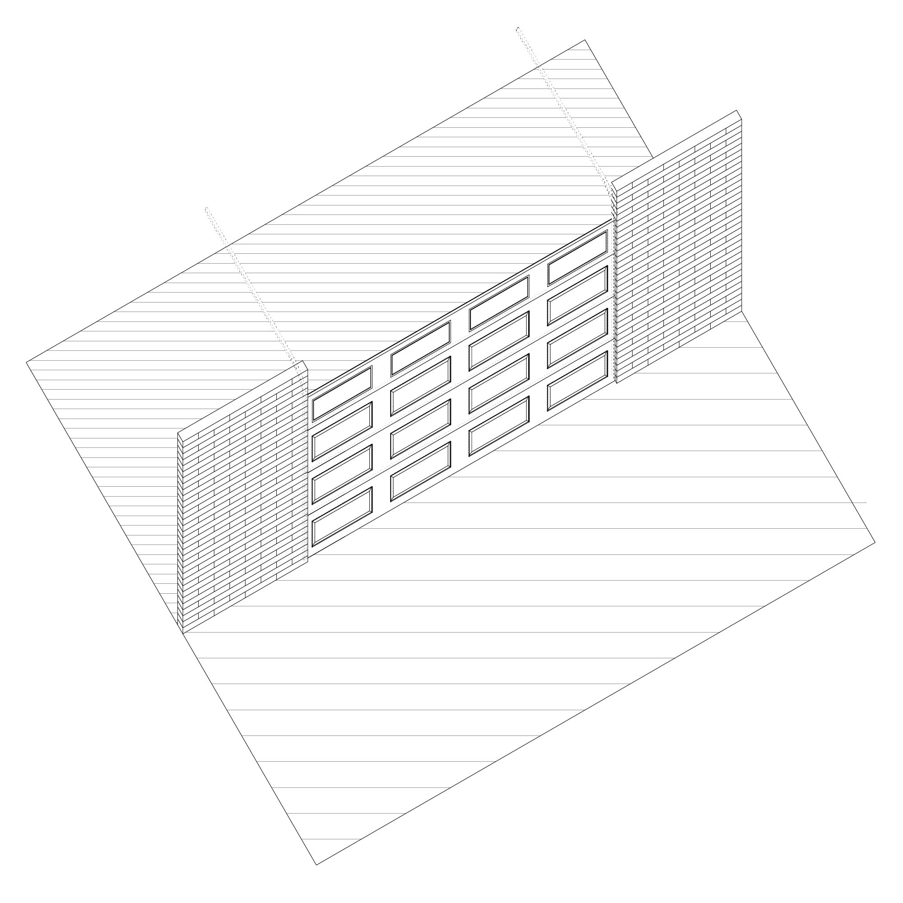
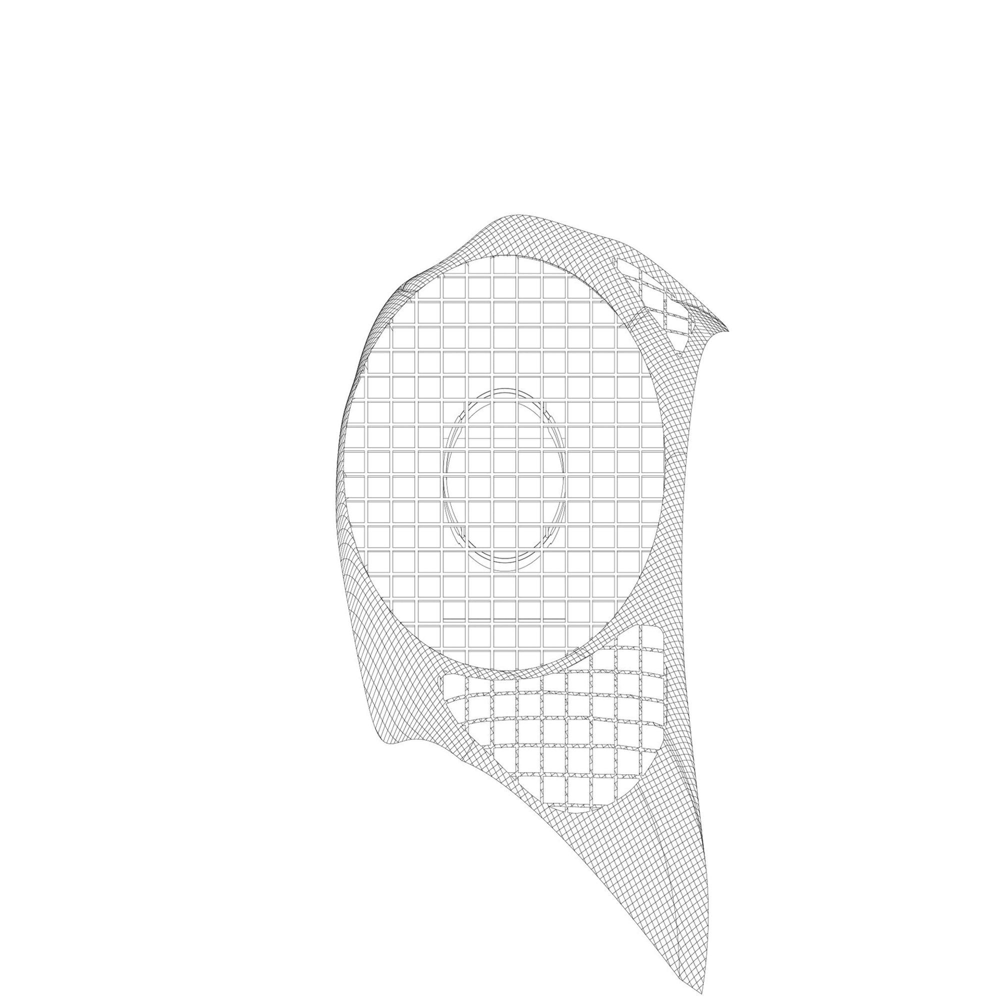

Roof of the Mercedes-Benz Stadium openning and closing.
Fall 2025
These are a series of drawings I created using a combination of Rhino and Illustrator portraying different architectural elements (doors, sidewalks, and roofs) in different views (axonometric, perspective, sectional, etc.) Making these drawings opened a new pathway of understanding how all elements are interconnected through the spaces they create. They also taught me valuable skills regarding digital drawing applications such as Rhino and Illustrator, as well as different ways to represent buildings and objects.
Roof of the Mercedes-Benz Stadium openning and closing.



